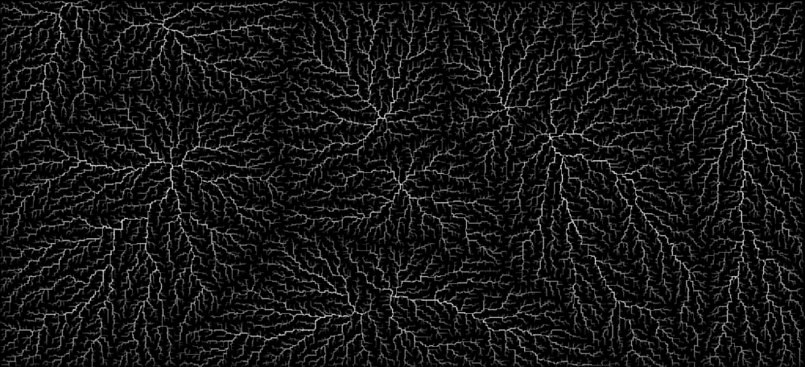

Try it yourself
An implementation of the Diffusion-Limited Aggregation algorithm using GPU compute shaders through WebGPU, in JavaScript. You can try it yourself if your browser supports WebGPU.
Example result:

The core idea is to place seeds on a space and spawn walkers that move randomly until colliding with one of them, freezing in place. Main variants include those subdividing the space in a grid and those with a particle system.
I found a particular example that for every iteration it spawned a walker, moved it randomly for a maximum number of steps and froze it if it collided. Each frozen particle has a single parent and when a collision event occurs, it updates the hit count for the collided particle and all its ancestors up until the seeds. The hit count is what's used for coloring the image.
Adapted algorithm
I decided to go for the previously mentioned algorithm because grid based DLA is easier to scale up in parallel. I changed the walkers part though, because it would cause severe thread branching as some particles would hit right away but others take much longer, with these ones dictating the pace. Instead I activate and move cells on every iteration, recording how many movements it did since inception. If a collision happens but the number of moves is below a threshold, it's deemed non valid, filtering out particles that randomly spawned too close to the frozen set. After the simulation goes on for a while I check if the number of frozen particles doesn't change in X number of iterations, and if so the threshold is halved. Smaller and smaller branches grow, eventually filling the picture completely.
-- Algorithm concept
procedure DiffusionLimitedAggregation
Place seed/s on X*Y array
while threshold > 0
for every cell
if inactive
small chance to turn active
else if active
if neighbor is frozen
if totalMoves < threshold
die
else
freeze
increase frozen cell count
end
end
move and increase totalMoves
end
end
end
end procedure